THE POSITIVES are nothing but a tiny fleeting speck in the landscape of comics.
Sometimes, they hardly even muster enough cause to claim affiliation at all, so steadfast they are to the d.i.y.-punk-fuck-all-zine long tail of the medium. This uneven mix will easily forgive us for neglecting them any merits in the legitimization of the field for serious academic studies, for they abide none.
But the interest of oddity, let us set aside the comfort of knowing none of the following is matter of concern for the educated & civilized and peek for a moment into the chaotic traipses of THE POSITIVES, for in their infinitesimal, descarding scale, something utterly uneasy is evolving. Something... awry.
Ladies and gents, we give you -
FULL
DISCLOSURE:
[D]EJECTED EXPLAINED
And his name will be Norm Hull, 'cause he's just a normal guy. But not everybody will get that. That's just for the scholars a hundred years from now. Brian Griffin
Abstract
The in-depth analyze of the dichotomy between the superficial reading of THE POSITIVES’s “[D]ejected” series and its hidden layers of personal significance, allowing us to better understand the inner workings of a highly coded comix hushed underneath simpleton jokes and thus revealing us a pattern of complex experiments with the medium - one that taps deeply into the subconscious for its main determination while keeping the unwary reader in total oblivion for the affliction behind it all.
Keywords: Comix, Art, Dichotomy, Automatism, Subconscious, Unconscious, Free association, Delirious muthafucka trippin’
Early Draft: either to use in my PhD, or I'll cut it down to size. Excuse my english :)
Intro
In 1997 I drew “XXX-Irritante”, a fanzine comix series that ran a total of 7 out of the 9 volumes planned. The series started as a one-of, straightforward, adolescent fuck-you exercise, but on it I gradually develop my own brand of comix. By “my own” I’m not taking credit for inventing a new genre of comix -I figure this is something that’s probably been going on for quite a while under the radar-, I mean “my own” as its is nature not to be shared with the world. And by “not sharing” I don’t want you to think I’m hiding my comix under a bed, quite the opposite: I’m shoveling them on everybody’s faces, every chance I get. But I’m not letting anybody into what the fuck they’re really about.
“XXX-Irritante” told the story of Xavier, who was in love with Susana. Among all the teenage angst I put down to paper, I learned how to mix a crowd pleasing vanilla storyline to keep the reader on page (hopefully), beneath which I buried a (not so) incomprehensible exorcism of anxieties, fears and hates. For you see, “Susana” was not in love with “Xavier”. Eventually, things got so bad Xavier offed himself. I never published that zine, although I did published the one before it where all his friends are mourning his death. If you know your Freud and psycho mumbo jumbo it entails, enough said… That was the “farewell” volume, soon to be followed by the series grand finale.
I drew it, I hold on to it, but than I didn’t publish it for I had the good sense to trash it. The art was awful: it’s pretty fucking hard to drawn when one’s shaking irrepressible and crying so plentiful, sopping the goddamn paper itself.
Besides, sometime after that, I married “Susana”, which brought the series to an (yet another unexpected) end.
I called this mix “Humor & Depression” and I’ve been distilling and practicing my thing ever since and bringing it to new highs. Nowadays I no longer take the trouble of masking plain storylines in-between the personal bits, I just lay down the two at once, occasionally fucking up somewhere and leaving the reader with that distinct “something’s off” feeling people so often get on my comics.
It’s time for full disclosure .
The Method
But before we jump to conclusions (pun intended!), there’s one important trait of my work for you to bear in mind: the method upon which I draw my comix. THE POSITIVES are a personal ongoing bio-slash-fictional-comix with different levels of interpretation / meaning BECAUSE of how I come by them. And so I present you with one of the biggest, most claimed, tiresome cliché of the art world, one that I myself must claim, for as wearisome and pretentious as it sounds, in my case at least, it is also true:
the characters
talk to me
(…and I just lost a whole lotta people right here. Movin’ on…)
I have never laid down a single script in my life, nor have I ever gone beyond a couple of thumbnails sketches of any scene. At most, I may write down a small dialogue between characters or setup endeavors for future recollections in a piece of paper (just to end up forgotten somewhere). I don’t plan the P+, I’m not in the habit of doing it, and I don’t like to. They are polite enough to only channel themselves at proper times (which can be a drag, I do have to create the right environment for them to come out and play), and I value them as intuitive, impulsive, instinctive storytelling. N-O-T something that makes every comic great, but it’s how I praise my own comix. I’ve trained myself to listen to their rambles, I follow them on their madness, I’ll draw and keep in the story any nonsense bullshit that comes out of their mouth - bullshit that I myself find hard to understand at times-, because I trust them. And lo and behold, two to three zines later, four to five story arches subsequent, those random claims, indictments, hate speeches or plain storylines present their true logic to yours truly. And sometimes, they even make sense to the reader :)
Now, not being a totally mad, la-la-land first class citizen, I’ll demystify the process for sake of discussion among rational human beings: there’s nothing eerie here, I just “go with the flow”, I let the story drive itself wherever it wants to go. Because. First: my comix are meant to be a long ride, unless something happens to prove me wrong, I’m thinking decades. So I’m not in a hurry to close loose ends: no matter how twisted or totally random something pops up, I’ve come to learn it will nest itself down the road. Secondly, going with the flow is to shut down the conscious and let the unconscious take over: all sort of things I have yet to deal on a sapient state of mind get materialized on paper. That’s way my comix are a big trip for me: they bring me peace, they bring me balance, it’s d.i.y. therapy. Other people zone out with chemicals and blunts, I trance on paper and pen.
My style is fast and clean and I’m in no hurry to get heavy-artsy on my lines, details, backgrounds or cross-hatch: precisely because I’m in a hurry to get the whole thing done before I get a chance to really think about any of it. If I were to get into too much graphic details I would get trapped way too long in any given panel, and I would fall in the temptation to over analyze it while in process, fucking up the overall meaning of the free flow of thought. Than it wouldn’t be therapy, it wouldn’t be “true” or “real”; it would just be a stupid fuckin’ comic.
Since we’re on the subject: fuck stupid comics. Fuck meaningless empty-shelled, no soul, industry compliance artsy weirdo comix. Sure, my stuff runs deep, its real significance is hidden beneath a plain vanilla layer guised to entertain, but I still try to keep it together (most of the times), I don’t want my comics to be some esoteric conundrum people can't dig, I do have an in-your-face-animal-rights-fuck-fascists-direct-action agenda on the table to promote .
I just use the airwaves to get something out of it too :)
THE [d] YOU MISSED THE FIRST TIME AROUND
Between the “XXX-Irritante” and the [D] series, I had a whole lotta practice on my craft, I evolved my trade, I grew my aptitudes and attitudes, and I set my peace with being who I am.
If the first series may now seem predictable and juvenile, nevertheless the seed was planted. The [D]ejected series felt like a return to it, but on steroids. On a nuclear warhead. The [D]s are not my highest level of split between the vanilla story / true intention behind it so far: I’ve achieved that in “The Roadtrip #3”. After a mostly all vanilla RT#1, a “reality-is-starting-to-shatter” “things-are-getting-greyer” RT#2, RT#3 went ballistic on me attaining not the usual two, but three levels of intention - something I find most suitable, it does have a “3” on its title after all :) The [D]s are, however, the most sustained powertrip so far, be it in volume or duration. While the RT#3 peaks higher on multi-universes, it never concealed me its intentions (well, duh), but the [D]s brought me back in heavy amounts the pleasure of discovering my own stuff, something I haven’t felt so strikingly since “XXX-Irritante”. And what a trip!
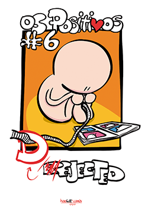
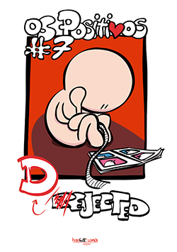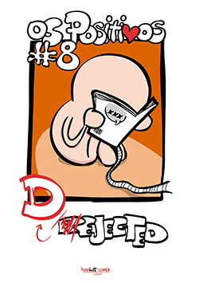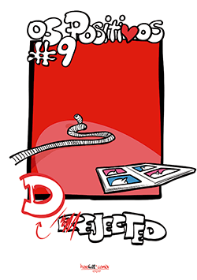
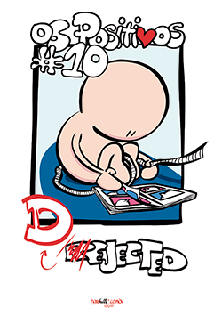
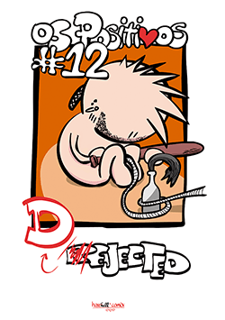
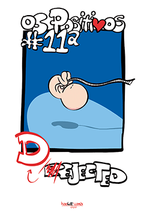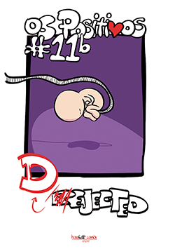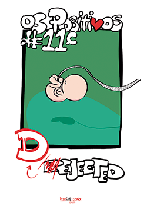
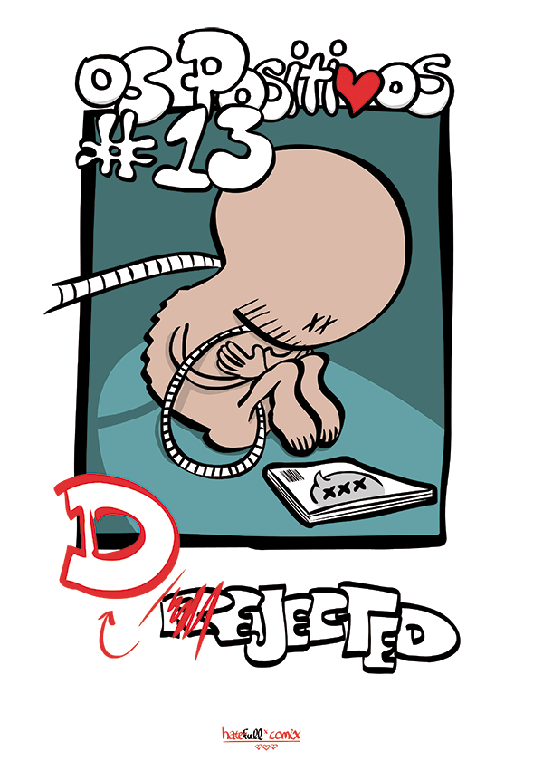all [D] covers from #5 to #13
[D]ejected #5
And, starting from [D]#5: a trip it is. We find Xavier stranded on the side of the road.
Please go metaphysical on me right now and you’ll get the meaning of it. “Xavier” is “stranded on the side of the road”... Get it? Turn your headset on existential mode and you will - look at what Xavier is doing,
...go hyperbolic and metaphoric dude: do I gotta spell it out?
And why is he stranded? ‘Cuz he "crashed" the "van".
Anything...?
And what happened when he got home? He purposely avoids “Valter” (hint-hint!)
And guess what? Valter finds out and he’s pissed as shit:
I mean, he just screams it out loud, plain and simple! So, are we on the same page now...? And X has no reasons to be concerned anymore, he just goes into numb mode and fucks away, dropping the "keys to the van" on whose hand? “Miguel”, who is totally unaware of it all and gets pulled right into it.
 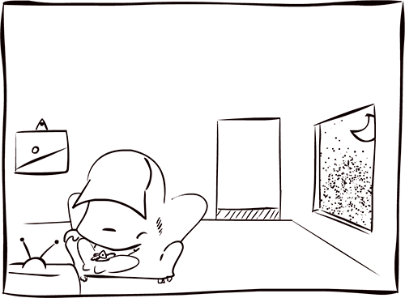[D]#5
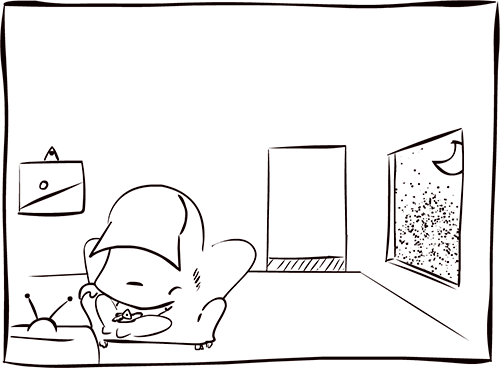[D]#5 Oh, the irony!... If you’re new to the whole P+ cast holy trinity , consider Xavier is usually the unpredictable, reckless one, Valter the predictable, responsible one and Miguel the (hostile) unknown. I beg you to contemplate an important difference between an “uncertain” X and “unknown” M: that difference splits them worlds apart. Miguel is the extreme hardcore straightedge gay guy, he is and will always be reserved, unspoken, outsider among outsiders. Unlike the rest of us, he has also long realized what he wants out of life and little to nothing surprises him. Hence, the whole irony: this time around, he’s the one in the dark.
Closing #5, the stunning “and so we restart” with V on a rage:
The vanilla translation: “we now pick on these series, after being out of it for the last few years”. Clean and simple, I’m sure no one ever second-guessed this one. The deeper-down meaning: not only we are restarting the series, but we’re resetting it too. The [D]#1 to #4 were going on a different direction (it was 2009 after all…), but now it made no more sense to go there, so I just went ahead and changed its course, clean slate.
& just to really bring it home now:
all of it happened IN THE DARK OF THE NIGHT
Now, before we go on, let’s really absorb what just went down so far. This is classical P+ auto-pilot unscripted storytelling: I did not planned nor staged any of it, I just let it all play out in front of me while blasting out some tunes on the stereo. Full realization came afterwards. If I’d had planned it, I would have edit it, but this is daydream interpretation, not cold science nor a check list of do's and don'ts from your run-of-the-mill “comics 101” workshop.
Still confused, right? That's ok, #5 was way too metaphysical, it gets easier up ahead: let’s jump into #6.
[D]ejected #6
Trust me: it isn’t hard to “figurative” on the meaning of something when all you got to work are figures. Literally. #5 was all pretty pictures and no words: I could have blob spots randomly on the canvas and prompt on them the very meaning of life itself. Consider the ol’ saying on the exchange rates for pictures and words: for any one picture I get thousands of the later, and I just drew an all-picture zine… But to mix pictures and words simultaneously, and still pull my deceiving designs, now that’s a different ball game altogether. Words bring something more to the table: on one hand they still allow ample room for interpretation, but on the other e-ve-ry-sin-gle-sen-ten-ce incurs into literal meaning. It’s a double-edged sword, with the right prize: the cognitive distance between the vanilla reading and the comix dirty little secrets gets blown into the stratosphere. At this point it's also easy to perceive why the previous zine felt so much like a lyrical intro to the series, even if you’re reading it with your dark force goggles on: you get to pick the tempo and words to materialize its significance inside your head. Not like #6. Poetry is over, this is business. And business is good.
We start off with a fairly vanilla set up: two guys talking. But then again, we’re clashing Xavier, unusually cool for the hot blooded one, with a way to agitated “hey-lets-not-get-reckless-about-it” Valter.
“We got a problem”, “you bet we gotta problem”, "see #5"… What did I tell you about words? They make their point in 4 seconds flat. Anyway, lets dig deep into it: reversed roles, wtf? V pissed with X ‘cuz he keeps trashing his van: consider the van role in P+ ethos. And this time, he might have fucked up the van for good. Again: this is big. AND on top of it:
 [D]#6
[D]#6Three things just happened there.
A) This is NOT about the crash. We actually forked the implications here, and you'll come to understand the reason behind it by the end of this disclosure, hopefully. For now, let’s just register the split.
B) Sofia is pregnant. This is huge for the P+ status quo. This is a show stopper, deal-breaker, red line, all bets are off, reality meltdown. I won’t discuss you the part Sofia plays - I won’t discuss any of the female characters on the P+ cast! I would need a “yet another full disclosure” just to go there…-, but believe me when I tell you this is a 360º spin on reality.
But wait, it gets worst:
C) “Miguel” did it. Buum!!, we’re in bizarro world now, cue the twilight zone theme song.
So X ain't not cool about shit, he’s just resigned to it all, he's one step away from “I can't handle the truth, so fuck it”. V stops trying to make sense of it all and loses his anger: why bother, he's helpless, he’s as lost as X. This is big, this is new, this is fucked up, and this is scaring.
So much so they can only joke about it…
PAUSE.
X and V “joke about it”… On the vanilla level, I’m tagging these two panels under “humor”. So obviously, down under, this is a one-way ticket to depression town, and we’re light-speeding to a full-blown wreck when this runaway train gets there. Like the previous “it’s not about that, it’s about this”, this is a (yet another) pivot moment on the story. I’m just gonna go ahead and quote myself from the “Omnibus” afterword so you can grasp how high the stakes are at this point:
A comédia e o humor podem ser bem menos engraçados do que parecem, façam-nos ou não rir. O humor pode mesmo ser depressivo. Para compreender o riso é preciso entender a sua função social: a comédia enuncia as nossas tendências anti-sociais e convidando-nos a rir delas, incentivando-nos deste modo a corrigir comportamentos e tornando possível o convívio social e o funcionamento regular da sociedade. O riso como punição baseia-se no nosso discernimento para nos adequarmos ao meio que nos rodeia: se alguém é incapaz de reagir em conformidade com o que acontece à sua volta será alvo do riso dos restantes, sendo a repetição uma das evidências mais elementares da inconformidade ao meio: alguém que perante as mais variadas adversidades reage sempre do mesmo modo é alvo de escárnio. Dependendo da sofisticação da sociedade, também o riso se torna mais sofisticado e o riso corretivo evolui para algo mais elaborado que nos permite rir não apenas de pessoas repetitivas mas igualmente do próprio princípio da repetição. Mas por vezes falhamos em corrigir comportamentos. Por vezes falhamos em rir da repetição. Por vezes somos demasiado anti-sociais para que o riso dos outros nos importe. (...) Os primeiros [D]ejected remontam a 2009, a sua origem já era então muito anterior a essa data, e quando foram retomados em 2013 exatamente sobre a mesma premissa rescreveram-se na direcção oposta. E a estória nem começou ainda. Se parece uma novela inconsequente é porque esconde tragédia na comédia à vista de todos.
Short translation: their jokes are fuckin' serious.
( There’s also quite a bit about "repetition" in there. We’ll get to that in a moment. )
We’re derailing, we’re free falling, and we’re deep in no man’s land. So out come the big guns. He’s not cool: he’s cold; he’s not the devil: he’s just (D)evil; ladies and gents, tha Man itself gets down to the plateau to restore order onto chaos: meet The Director, he runs the show. Let me repeat that, the text runs long, the lonesome google bot reading this page is probably tired by now so let’s just say it one more time: “he-runs-the-show”. Let it really sink in, will ya?
Reality is a pain, and D delivers the painful reality to them both.
Oh, but they bite back! Fearless little fucks, aren’t they…? Well, not so much, it’s all about their chronic disrespect for any authority, it's their nature. They will bite the hand tha feeds... And to whom do you think they’re talking to? Can I get any more straight up on the whole thing?!
"Blaaah", "my comix is art", "look at me / pity me" (goes both ways...), "the drama, oh the drama" + "as if one can't tell the difference between what's going on"... Do-you-get-it? But going meta won't do shit for them, this is happening, this is real, they can front all they want but there’s no avoiding this. Besides, D is a cold evil man.
By now X totally gives up, he’s been broken. V is angry, it all seems so unfair to him. Sure, X is reckless fuck, he had it coming, but not him: he lives in-between the grey shades, he’s been cautious all his life, he’s smart about it all, he’s been on the inside since forever, he’s an high-tech dirty-bomb where X is a noisy, blunt, primitive AK-47… So why does he have to pay for this mess? It’s so fuckin’ unfair...!
But time has come. We’re ready now.
The great unknown is upon us, and he’ll be angry as fuck. Bring on the gimp: time to go medieval on our asses:
ENTER MIGUEL!
Are you still reading between the lines, or are you starting to see the writings on the wall?
[D]ejected #7
It’s been over month since the last [D]. At this point I’m still just going through the motions and not giving in to the story much thought. I trust them, they’ll run their course if I give them their space, and like I said once about a certain nomination for a certain award, “I’m not even trying”, just renting my time to the P+ cast and flat-lining the graph on my brain. Anyways… Where were we? Oh yes,
Armageddon time! The End of Days! Apocalypse!
…Except:
It’s a dud. X and V swerve the second coming of the lord on some bullshit they come up with, and M bites it.
Now, bear with me, I’m as stunned as you are! This is something I did not see coming. I just sat down and set the stage as I was supposed to:
…but some how the joint efforts of the thoughtless and the conscientious defuse the (bleak) unknown, and he just turns his back and disappears once more.
And I’m not the only one dumbfounded: X and V can’t believe their luck.
“I don’t know what to say” “this was too easy” “totally anti-climax”… Can you hear the echo? They said it on paper right about the same time I was staring down at them wondering what the hell is going on here?! “and…!?” “dude, I’m lost, I don’t know what to do!” Again with the echo…
At this time everybody is lost... now what?
 [D]#7
[D]#7So X, being who he is, gets the ball rolling like he knows how, and takes initiative:
Get your head back on crazy P+ secret lingo mode and read it like we mean it: “gonna take a shit” translates to “fuck this shit”, and off he goes. “whatever…”
And since we’re decompressing, surely you could have guessed what I like to swing at when I’m just clowning around…
Yeah, that’s classic me not givin’ a fuck either.
Anyway, something’s really off here. “Valter”’s not convinced about any of this. “Xavier” may be quicker to rebound back up and storm into the next thing without a care in the world, but V is a tactician, and he’s still thinking about it all. Wait, is he following M? Why tha hell is he going there? Don’t fucking go there! Leave him alone! FUCK! FUCK-FUCK-FUCK!
At this point hits me I’m in deep shit.
And being who I am, I deal with it the way I know how:
I joke about it.
But let's summarize it so far: we're left with an empty room; X is literally taking a shit on the whole thing; V disappears into the unknown…
Can’t get more symbolic than this but I’m amazed how I failed to notice where we're heading earlier on. Still, I was intrigued enough to pursued it with a passion, and ended up drawing the first of two hidden trilogies inside the [D]ejected series (#11a, #11b and #11c was the other - we’ll get to them soon enough…) that same month on a row. On it, eventually, the recurring theme became way too obvious to me. Just not for you.
[D]ejected #8
Let’s see… V is tha house, yo! An here comes Miguel, let there be divine retribution!
“Alright now, what tha fuck is really going on here?!”
Get it? That’s 100% me right there, what tha fuck is going on here?!
Wha-? Tha hell?!
And I’m not the only one missing it, here’s V:
("I dunno?") Well, no way this is going down like that, fuck that, let’s go at it again, party people, I don’t know what’s going on here but I’m getting to the bottom of it, places you punks, we’re doing it again!
 [D]#8
[D]#8 And here comes trouble!
 [D]#8
[D]#8 But than… everybody just disappears on me!
At this point, I gotta go get the D-man, this is starting to get stuuuuupid.
 [D]#8
[D]#8 “Am I disturbing?” “Yes you are! So be fast about it and fuck off”… Jesus, come on! Anyway, Shark’s doing the talking, but I’m on board with him on this one: are we gonna keep dicking around? What gives?
Well, and there you have it, the D-man just kindly reminded me who’s in charge and told me to go fuck myself… My god, have I learned nothing?!:
Tha balls on me, to go straight to tha man to ask him for an explanation… I totally botch that one. The next zine wrote itself, really.
But if you already forgot about it, let me recap this one for you: everybody’s running away from ”Miguel”. But he’s coming to get them, and that’s for sure…
And I’m left once again with an empty room. A room stays empty for way too long.
Let me state that one really, really clearly: move on to tha next zine!
[D]ejected #9
( keep pressing this button... like, for ever )
It goes on and on and on and on... And that’s exactly how it felt to me back than. But I’m getting ahead of myself; at this point I was still clueless about the all thing. Just, getting a whole lotta suspicious of its meaning.
You see, this trilogy is about repetition. About not learning from ones mistakes. About pushing for it, and fuck all tha hell with tha world for if it’s not to be, I’ll fucking make it happen.
Again, on the vanilla level this is either humor or stupid, but here down under I’m tearing my insides out and going mad, I’m at that place I’d pick a fight with just about anyone just to get my skull smashed in just to stop thinking about it.
So yeah, keep pressing that button, it’s just a funny gag for you! Everybody runs away from “Miguel”, “Valter” tiptoes around, “X” is on the hiding, V&X occasionally find themselves, M lurks about, he takes is time, once in a while I make funny bunny hears in front of the camera, cuz, you know, it’s all a big joke.
Not.
Let’s wrap it up, shall we: this first trilogy? The underlying theme of this game of cat and mouse between responsibility, irresponsibility and the great –and scary- unknown is the empty room, those vacant chairs, the absence of action, in short: WHAT'S NOT THERE.
the [D]'s first hidden trilogy: first we got curious about it, than we jumped into in, than there's no one there...
But it's coming now, as the saying goes: it's in the mail and there’s no turning back.
[D]10: got a hold on ya!
Time to turn a new leaf - in the following month I would put out [D]#10, and trouble is buzzing at the door:
[D]ejected #10
[D]10
Sofia arrives. It’s been a while…
She came to talk with X, not V. But V has stakes on this situation too. For now, he’s going to have to wait it out.

[D]10
“We’ll talk later” “OK”.
[D]10
Shit’s too heavy so I felt like cutting to a lighter scene right about here. And what’s lighter than a non-existence scene?:
[D]10
But I don’t really run the show, I just loan my time to tha Man, and he had other ideas:
[D]10
Instead of easing the mood, he takes us out to meet heads up with a very pissed off Miguel
[D]10
This is also the first time we step outside the house in the whole series, and we’ll only go out once more, in the very last zine. Should we read anything into that? Why, SURE! Like always, I ran it without a second thought, but on post-scriptum it’s clear to me if we were to jump into psychoanalytic exaggeration we’d easily find another bone to pick. So let’s give it a try, shall we?
[D]10
The moment we step outside, Gimbras enters the picture. Coincidence? I don’t think so… On the plain level Gimbras is there to recap the story so far to the reader. In our twisted aftermath, we know Gimbras is the one and only person in the whole world to whom M shows any restrain (not compromise, restrain…) For M is one big hardcore faggot but when it comes to G he turns into a little sissy, and for whatever reason he behaves himself. Translation: in the “outside world”, even M “conducts himself” on certain (very, very specific) occasions. M&G sequence is entwined with another sequence, where V is “downstairs” with Rafael (aka Rafa, aka Gil), G’s roommate. In it, V is fighting R for the remote control of the television. Again: the dude is fighting for a very frivolous thing… If you desiccate it, once more we find one of the P+ main characters “outside” his “house”, and just like Miguel, he's not behaving like he is supposed to. Turns out the “responsible”, “pondered”, “rational” fella in the bunch is just as immature and punk ass has everybody else. Bottom line: people are a whole lot more complicated than they appear, especially outside their comfort zone.
Anyway, moving on with the story, the important take way here is:
a) M is onto X and V
[D]10
b) V is fighting G’s for the “control” of the television (we’ll come back to the “TV” soon enough).
[D]10
c) …and all along X is convincing Sof that it will all play well in the end, for they are not class-A assholes:
[D]10
And we conclude this zine with a major shift on the storyline. First and foremost, V now has the command.
And that’s a FACT.
[D]10
Turns out the command for the television stands for a little something else. (Did I mention we’ll be coming back to the whole “TV thing” later on? I did? Shit, am I repeating myself? It’s late, I must be getting tired… ) Now V has the power! He is in control! He calls the shots. He’s tha Man!
And since “V” is in charge, we’re setting the records straight! M is finally heading home to get to the bottom of it all. Fuck yeah, tha hell with all the deep-feelings crap, let’s get this done already!
[D]10 well, G is tagging along, it will be interesting to see how that plays out...
On with tha show, bithis! Let’s get cranking with [D]11.
…except: I don’t have much saying on any of it, really, so, imagine my surprise when I sat down to draw [D]11 and instead [D]12 pops-out! ...punkass muthafucka, don't I ever get a break?!
[D]ejected #11 #12
[D]12
Before proceeding to the next zine, here’s one big huge monstrous tip on how to check out my comix: cross them against a calendar. THE POSITIVES are positively a seasonal comix. Oh, they still come out whenever, but sure as shit their temper swings with the time of year. Case in point: [D]12.
The previous zine came out March, and all the others presented themselves regularly every month, sometimes twice and thrice. I put them all out on a burst: I was racing the clock. But than they suddenly stop, and it took me till July to spring the dirty dozen. It doesn’t take a rocket scientist to figure out my habits between January and early March and my “hibernation” till July, so that’s of no concern of yours. BUT, what does matter is my mood when we hit that mark.
By then, I’m usually coming out of my slumber. And, odds are, I’m on a voracious appetite for destruction.
By the end of [D]10 I kinda knew these punks were going on time out so I made my best to get them all tidy up for later: a whole lotta crazy shit was going down on my level of insight -most of it totally unclear to me but I played it anyway, I was sure I’d figured it out eventually (and I did!)-, and for the rest of the world, the story still made kinda sense on the vanilla level. So before recess curtains came down, I gave control of the story to V, S entered stage, I brought G and R into it too, everybody was in place and M was on his way to confront them all.
Yeah: game, set, and match on the way.
But.
You know. These little punks have a mind of their own. So when I did got back, it didn’t quite go the way I thought it would.
I shed my skin around this time of the year. The little voices inside my head have been building up and getting ever more restless. My need to go on paper is a hitch that’s begging to be scratched, and nothing pretty comes out of scratching a sore I’ve been holding for as long as I could. I hit that zine like a junkie on a suicidal downfall bend on debauched and depravation.
I shut down with the stereo blitzing my playlists on shuffle and let go. I transcended. I released. I was out of it. I was one with nothingness while my hands were rushing thru panel after panel until I finished the whole thing and stared back at it.
And, well, you know… Tha hell...?!
So, again, there they go, them punks are trying to come across with something. They totally skip [D]11 and go straight to [D]12. That's a first!
We'll come back to this jump in the story, but first and foremost: whom comes out to lecture me? The Man himself.
[D]12
The Director is not one for pet talks, so it’s kind of a big deal when we start off with a face to face with the guy on what seems a very philosophical discernment on –whatever his talking about. This guy’s is too important to give you the time of day, and here he is talking straight at us on an eternal backdrop center stage. Damn!
[D]12: and the pause just kills me!
So, obviously, I had no ideia what tha fuck he’s talking about.
[D]12: they turn to V for some enlightenment
But that’s not preventing the story to go on, heavens no! There's a whole lot about this scene right here, but like all the pieces I'm giving you, we'll put it all together soon. Bear with me: just like you, revelation hit me near the end. This speech works on so many levels, it probably speaks to you too. On retrospective, it validated my suspicions when I made the click. But movin' on:
[D]12
Full understanding of the P+ never was a requirement anyway. On with with tha show…
In the next scene Xavier is slacking around the living room doing jack shit while Valter gets suckered into the kitchen to do the house chores X should have done while Miguel comes over the hallway.


[D]12
Now, pretty basic stuff, right? Nothing there to see, right? But let’s have a go at it anyway; pretend all that crap is metaphorical. So we got the lazy immature bum watching tv (we’re still going there, hold your horses!) while the house provider gets to do all the inglorious work needed to keep shit going, and their brother’s keeper hangs around never really here or there but always near by and checking on them both.
…Get it?
Again: I just put it down without a care in the world, but when I read it back shit just keeps coming together. And I’m not even trying…
And we’re just doing the set! let’s read the dialogs now. Deep breath:
X is going on and on about the things he did and didn’t do. And brings it all down to “I didn’t do the things I didn’t do because the things I did do didn’t let me do them”. I don’t even know where to start on this one. This is… everything, the story of my life from beginning to end. I just won’t touch it here, this is yet another full blown disclosure, so fuck it: next!
V is in the kitchen and he’s fed up with X’s arguments. Again: V is in the "kitchen" doing the shitty work and he’s fuckin’ fed up with X," sitting on the couch in front of the tv" going on and on justifying his deeds.
Breathe out. Got it? Dude, come on!
[D]12
Emptiness. Nothingness. A blank. Change of set. Wait, wait, my bad, so again: "change of set”.
[D]12
And now it just gets weird.
I’m still in shock with a) the inexplicable jumping over [D]11, b) the opening speech by D coming out of left field, c) the also out of nowhere X & V blunt exposure of stuff, and just like that D cuts the sequence putting me on pause, but it’s a fake pause not meant to be: when I’m thinking I’m gonna get a break to catch up shit just keeps coming with yet another “no-fucking-way!” moment.
[D]12
Valter comes up to the Director to demand satisfaction about the all thing so far!
[D]12
Now, uh, read it yourself...:
[D]12
Way-way too much stuff to have a go at it. You be the judge. And, since we’re messing about and this is the first zine coming out after that all PPBD thingy, I indulge myself a bit :) You know, mix the depression with the humor...
[D]12
But just a little bit, and the joke’s not totally gratuitous: it set up V for D’s retribution, and we’re back on hardcore P+ deep waters with D sledge-hammering V to a pulp: who tha fuck does he think he is?! Don’t get me wrong, I’m all the way with V on his take on the story so far, that guy is definitely on the path of wisdom ;) but, really, come on, D is on his own path and he’s not taking shit from anyone.
[D]12
Trust me, I know: that dude runs the show. So V pays the penalty for wanting to fly closer to the sun: he ended [D]10 holding power and bragging about people sucking his salty balls, but then he ends sucking balls himself.
[D]12
The irony.
This is exactly what I mean when I tell you my comix have a life of their own. But now let’s debunk it!
One of the main reasons we skipped [D]11 and went straight to [D]12 is clear to all: I was letting steam out. And not just any steam, but the worst kind of stress buildup.
I also had a lot on my head concerning the [D]s, for I had been out of them for a while & the distance made them more apparent to me. I wasn’t quite there, and I didn’t try to rationalize them as such, but in some subconscious way I guess I had already figure it all out by then. And this is my sub letting me know it’s coming: brace yourself. (And we’re so-so getting there, please be patient...)
Finally, and this is something I’ve known before: every time I get to stay away for a while, I come back to my comix with upgraded dexterity. For some, it takes constant practice. For me, procrastinating transforms itself into instant advancement on my skillz. Time is so on my side. Meaning: this zine is also far outer than the previous because I had just level up.
But having cleansed myself, it’s time to get my head on the game.
Now, remember what I told you about my comix and the time of the year? Well, summer time is upon us when we reach [D]11a.
Summer time is special. I peak in the summer. I’ve been willing, I’ve always been willing, but now I’m able. And I’ve just cleared my head. Let’s play.
By the end of the following trilogy, I got my disclosure, and so will you.
[D]ejected #11 ABC
[D]11 ABC
And just like that we jump backwards in time to [D]11. But nothing is ever so easy & this zine actually split itself into three volumes, spawning the second trilogy on the [D]ejecteds.
They’re named [D]11 A, [D]11 B and [D]11 C because of their spread, but their designation goes beyond the requirements of indexing them. Their name carries a secondary meaning underneath it, for it also designates the nature of the trilogy. They’re the “ABC” of the series, a sort of a “child” intro to the all story so far.
Picture if you will the perfect storm. The story was ready and set, begging for a match for quite a while now. I had been out of it for months now. I had just discharged my poison and rinsed my soul. I had just leveled up. And I’m on my peak.
Like all the others before, the zine wrote itself with minimal if any interference from the conscious, deliberated me. But than again, in the eye of this storm, the conscious, subconscious and unconscious overlapped as they worked in straight alignment with each other. If you will, D is calling the shots, but I got to co-write the script. (Although he did remind me to stay in my place, as you’ll see in just a second…)
Bottom line: this trilogy is the most deliberate of all the [D]ejecteds. And the alignment of all my levels of intentions allowed me to write the most vanilla story so far, one that would be easily accessible as a stand alone for whomever, while still going about my therapy for my own personal narcissist reasons.
Let me recap them really-really fast because I want you to keep your eyes on the ball. Besides, like I said, its plain reading gives you some solid meaningful bases to grasp what’s going on, I don’t need to bother you with the personal stuff I got going there.
# A
Sofia is in Xavier’s bedroom. She gives him the news. He’s disturbed by it, but, than again, being a lazy reckless punk, he soon zones out and gets stuck into sex-sex-sex mode.


[D]11 A
We interlude the all thing with D reminding V who’s the Man. If this is all you take away from this zine, it’s good enough for our purposes.

[D]11 A
So having determined who wins the biggest dick contest, the story goes on:

[D]11 A
# B
They are still in the bedroom; they talk about the situation, and the gang arrives, so it’s time for Sofia to get tha fuck out of there.
[D]11 B
Again we'll interlude the all thing with a censured conversation between S and V that’s none of your business. And 'cuz it goes into dark places, I put a joke on top of it. By now you know that’s how we roll, right?

[D]11 B
...anyway,
[D]11 B
# C
X steals the remote they’re all fighting for (get it?) and everybody chases him out of the house, leaving Miguel behind. Reckoning something’s odd, he quickly realizes that Sofia must be there and calls her out. They exchange hash words and Sofia is going when Miguel calls her bluff for she’s not even trying to put up a fight – believe me, when they really go at it, it gets way ugly… Miguel tells her he’s glad she’s in a tight spot, and Sofia reply’s is nothing shy of a threat.

[D]11 C: & this last panel is a bomb - IF ONLY I'd explained you "Sofia". But I won't.
There’s still plenty of P+ self reference obscure lingo going on here, but not really relevant for the disclosure at hand. Heck, some of you know first hand what I mean with the first line on not being too comfortable with what’s been “outside of me” for sometime and having to "change the t-shirt" now... But screw all that, we're getting to the end of it all right here:
[D]11 C
Right here, right now. This is it. You got everything you need to know. Did you click?
…?
note:
I’ve even redrawn the last panel in the trilogy, breaking the steady shot in the entire [D]s just to get closer and personal on Sofia’s reply to Miguel. This is NOT something I like to do. In this series I’ve since corrected a couple of perspectives inside the compo but this is the only reframing going on ‘cuz I really needed to punch it in right there. I may redo an entire zine – here's the comparison between THE POSITIVES XXX-IRRITANTE #1versions I and III-, but I’ll bury any zine before correcting a single frame… Crazy.( OMG! K7s and land line phones! I'm old! )
But hey! if you’re still hazy about it all, I’ll break it down for you, it is a full disclosure after all. But bear with me just a little while than, we still have one [D] to go thru, maybe you’re just a little slower than I was…
Wrapping it all up, what we’re down to so far:
[D]5: X crashes the van. The D’s were going to be all about that story in a zillion zines, but I let it fade out. In retrospective, it made sense this zine turned out mute: I never talk about the events it stands for, and that's one of the clues that set me off on its real meaning.
[D]6: ...But years had passed so that accident got forked onto another slightly less metaphorical but equally disturbing. It’s not as lyrical as the previous zine, but it goes as deep.
The [D]789 trilogy: we recurrently (I counted 3x) avoid getting on with the story, and amidst X&V efforts to sidestep Miguel we’re increasingly left staring at an empty living room. At some point, we’re even trapped there on an infinite loop…
[D]10: Time for a new lease on life. We set everybody up and V even made a run for the helm of the story.
[D]12: …Just to get trampled by the D-Man as that zine came out in best-of-worst-of-best-of-times. Once again the story makes another turn. But this time, I got game, bitchis, I zeroed in.
For you see, this time everybody’s in sync, and by everybody I mean Me, Myself and I. It’s the [D]11 ABC, the most plain vanilla set of zines within the [D]s, but also my closing act of deception from up on the stage. And it ended with a threat: “oh, my sweet little boy, it’s so on!”
All the [D]s revolve around the same story, only in 3 very different moments of it . I figured it out right near its end, but, at least, I did it in time to close the all thing purposefully. My dear google bot, as sole reader of my disclosure, I give you [D]13.
[D]ejected #13
...The cherry on top. This one was post-revelation. I’m along for the ride like always, but the scenery passing by is no longer one of a foreign country I’m unfamiliar with, but of a place I call home. D has whispered in my hear, I’m on the inside loop, and he’s about to give me a little something else too - turns out D might have a heart, deep (very deep) down.
But, of course, D is still D, a harsh bitter man, so even when he does toss a bone and shows you some love, you know it’s gonna be tough love.
[D]13: and so it ends
First of all, I had to end on the 13 . It would be a crime not to.
We’re back to the usual set and picking up the timeline after [D]12. Although [D]12 and [D]13 have a whole trilogy between them, they actually come back to some of the same disposition: in [D]12 I put my war paint on; in [D]13 I’m seating on top of a pile of corpses gazing at the aftermath. Really: check my moods against the calendar: in [D]12 I’m stepping in, in [D]13 I’m about to go off the grid and I need to bring it to an end. Besides, in [D]12 D comes to me, and in [D]13 I’m to be at his side.
So, without further ado:
Everybody is where they were and X is going on about how he could had given the remote to Rafa…
[D]13
V is not that impressed and kinda since X wants to there, he brings back the all van situation…
[D]13
And X gets the fuck outta there to avoid having that talk…
[D]13
And M picks up on cue and brings up the whole “avoiding” thing:
[D]13
And V gently get’s tha fuck outta there too…
[D]13
Bringing it back full cycle.
[D]13
Almost.
This is repetition. But! with a twist. A sweet-sweet promising, lovable twist. Pay closer attention, will ya? We just revisited part I and II of the story, but we didn’t’ reiterate part III.
As soon as M has his spurt of ire,
[D]13
D shut it all down.
[D]13
It may not mean anything to you, but moves mountains to me. Sofia’s threat is real and it’s coming, Miguel’s reaction will be atomic, repercussions will be dire, hard to predict and long lasting. However… sweet lovable however, dear beloved cherished “but”, “still”, “nevertheless”, “yet”…: the cycle may be breakable.
[D]13
And that is... good --- it's not much, it’s just a maybe, a perhaps, I’m just guessing out D’s intentions , but he’s scripting a fresh start, and I don’t know how he will pull that one, but he stopped the cycle just short of S and M clashing each other so that must mean something!-
And that’s
all I ask.
This story is still in its early beginnings, and I can’t predict where it will take me but I’m sure it will be my longest tribulation to date.
And I welcome it.
I’m aware of all the crazy shit them punx did on this series and it’s underlying, so it’s time to shut it and make right.
Thank you.
- # -
( And hey, if we’re packing it, I should make it right, right here, right now. Hit the non sequitur. )
[D]13
( No, it’s not. )
Before putting it to bed, there’s still that “for the masses” thing to redeem: I might be my exorcising my personal ills on the abstract end of the comix, but on the upper level we’re still on a mission for the cause.
Hey punx, I’m good: shall we?
1. Forever obnoxious and stubborn.

[D]13
2. And downright agressive against the evils that lurk in-between the darker cracks of society.
[D]13
Conclusion
Comix should be accessible in every sense of the word: they should be hand out on the streets to the passing public, and they should be blunt about their message. Without a clear understanding of its purpose, they are meaningless, on a slippery slope for being mistaken by Art . Be it on form or function, THE POSITIVES are firm to expose their intentions to a larger extend at the most basic level. Above ground, those charming little characters curling themselves on witty engagements directly serve their propaganda thru actions and words, but ever so often they add an extra layer of interpretation when recurring to more indirect measures of discourse. The TV set on their living room is one embodiment of such practice: the creator of the series despises mass media and it’s manipulation, and the insertion of the TV prompting “bullshit, more bullshit, bullshit all day long ” amidst the trio aims at attaining that very level. We should exploit the riches of those implications but this humble scribe of yours wussed out, so forget it . But below ground on it’s obvious and not so obvious plots to subvert the youths, THE POSITIVES speech dwells on self preordained oracle-like devices of discovery and fulfillment, ones that his own creator can only guess as it unveils in front of him. Down there, THE POSITIVES can be overwhelming .